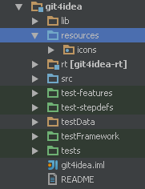

Working with Icons and Images
Icons and images are used widely by IntelliJ Platform plugins. Plugins need icons mostly for actions, custom components renderers, tool windows and so on.
How to organize and how to use icons?
The best way to deal with icons and other image resources is to put them to a dedicated source root, say “icons” or “resources”.

The getIcon() method of IconLoader can be used to access the icons. Then define a class or an interface with icon constants in a top-level package called icons:
package icons;
public interface DemoPluginIcons {
Icon STRUCTURE_TOOL_WINDOW = IconLoader.getIcon("/icons/toolWindowStructure.png");
Icon MY_LANG_FILE_TYPE = IconLoader.getIcon("/icons/myLangFileType.png");
Icon DEMO_ACTION = IconLoader.getIcon("/icons/demoAction.png");
}
Use these constants inside plugin.xml as well. Note that the package name icons will be automatically prefixed, and shouldn’t be added manually.
<action id="DemoPlugin.DemoAction"
class="com.jetbrains.demoplugin.actions.DemoAction"
text="Demo Action"
description="This is just a demo"
icon="DemoPluginIcons.DEMO_ACTION"/>
Image formats
IntelliJ Platform supports Retina displays and has dark theme called Darcula. Thus, every icon should have a dedicated variant for Retina devices and Darcula theme. In some cases, you can skip dark variants if the original icon looks good under Darcula.
Required icon sizes depend on the usage as listed in the following table:
| Usage | Icon Size (pixels) |
|---|---|
| Node, Action, Filetype | 16x16 |
| Tool window | 13x13 |
| Editor gutter | 12x12 |
SVG format
As SVG icons can be scaled arbitrarily, they provide better results on HiDPI environments or when used in combination with bigger screen fonts (e.g., in presentation mode).
A base size denoting the size (in the user space) of the rendered image in 1x scale should be provided. The size is set via the width and height attributes omitting the size units. If unspecified, it defaults to 16x16 pixels.
A minimal SVG icon file:
<svg xmlns="http://www.w3.org/2000/svg" width="16" height="16">
<rect width="100%" height="100%" fill="green"/>
</svg>
The naming notation used for PNG icons (see below) is still relevant. However, the @2x version of an SVG icon should still provide the same base size. The icon graphics of such an icon can be expressed in more details via double precision. If the icon graphics are simple enough so that it renders perfectly in every scale, then the @2x version can be omitted.
PNG format
All icon files must be placed in the same directory following this naming pattern (replace .png with .svg for SVG icons):
- iconName.png W x H pixels (Will be used on non-Retina devices with default theme)
- iconName@2x.png 2*W x 2*H pixels (Will be used on Retina devices with default theme)
- iconName_dark.png W x H pixels (Will be used on non-Retina devices with Darcula theme)
- iconName@2x_dark.png 2*W x 2*H pixels (Will be used on Retina devices with Darcula theme)
The IconLoader class will load the icon that matches the best depending on the current environment.
Here are examples of toolWindowStructure.png icon representations:
| Theme/Resolution | File name | Image |
|---|---|---|
| Default | toolWindowStructure.png |
|
| Darcula | toolWindowStructure_dark.png |
 |
| Default + Retina | toolWindowStructure@2x.png |
|
| Darcula + Retina | toolWindowStructure@2x_dark.png |